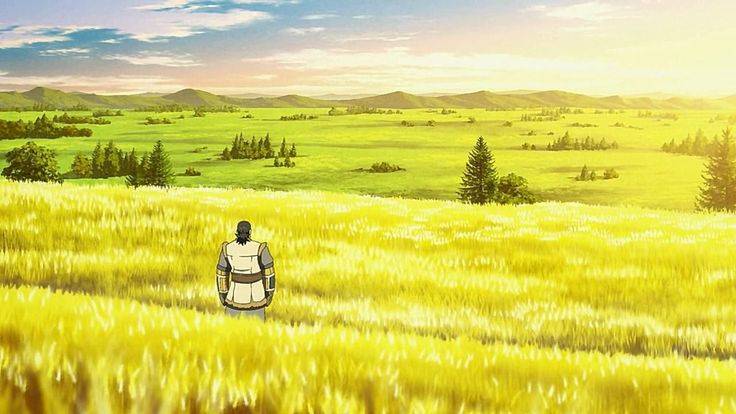
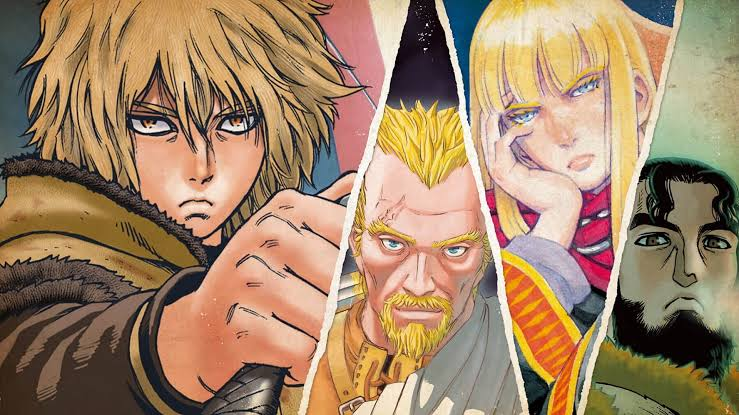
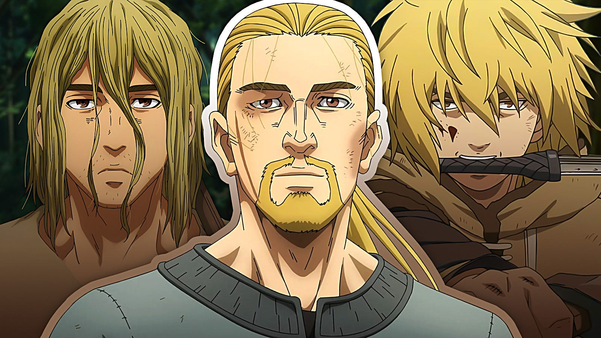
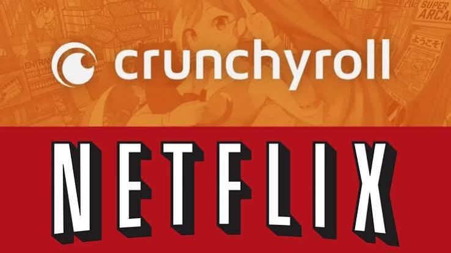

Um anime Ambientado no ápice da era Viking na Europa, Vinland Saga acompanha Thorfinn, um jovem criado em meio a guerras e movido pelo desejo de vingança após a morte de seu pai, Thors. À medida que o conflito entre a Inglaterra e os dinamarqueses se intensifica, Thorfinn precisa encarar as consequências do ciclo de violência e descobrir a lendária terra de paz conhecida como Vinland.




© Projeto de front-end acadêmico de Tiago Almeida de Abreu baseado no mangá e anime de Makoto Yukimura. Todos os direitos reservados aos estúdios e autores originais.